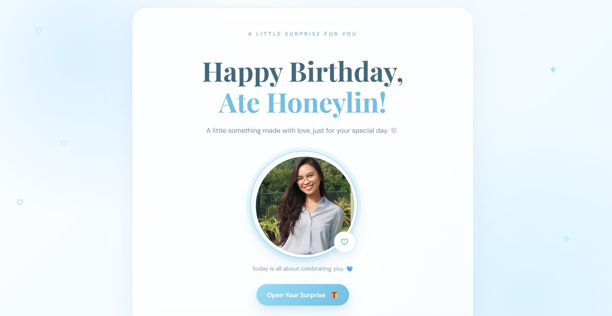
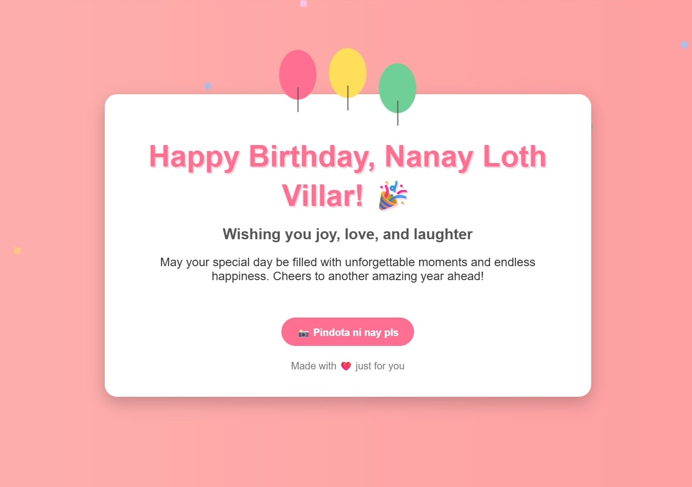
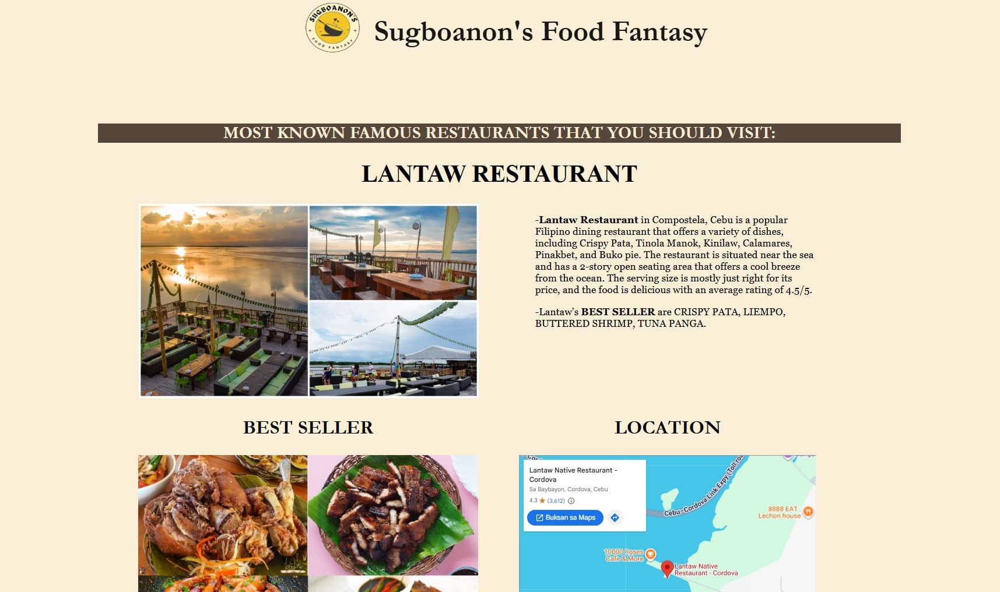
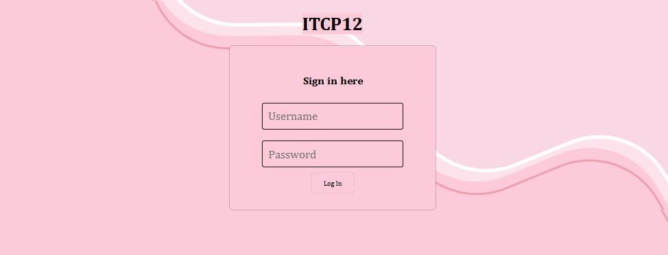
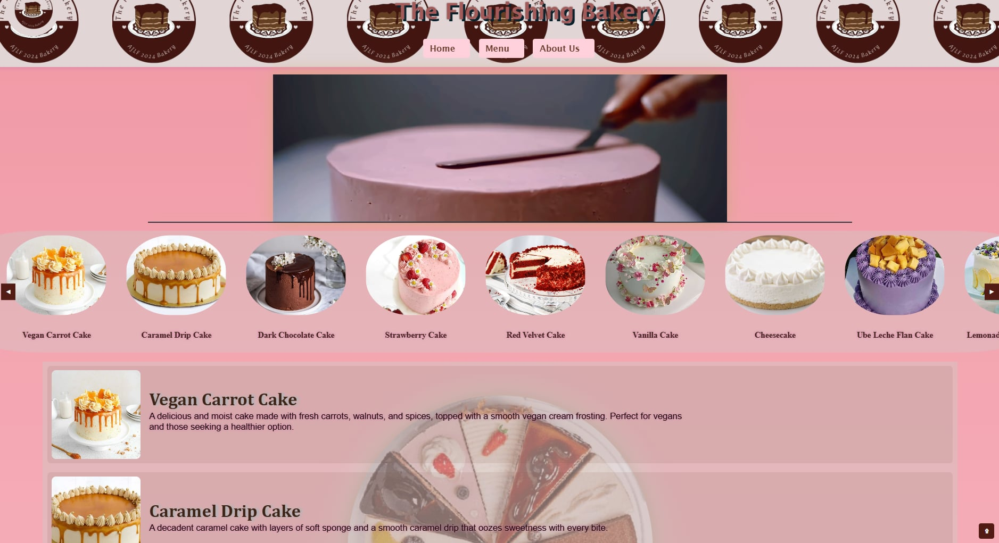
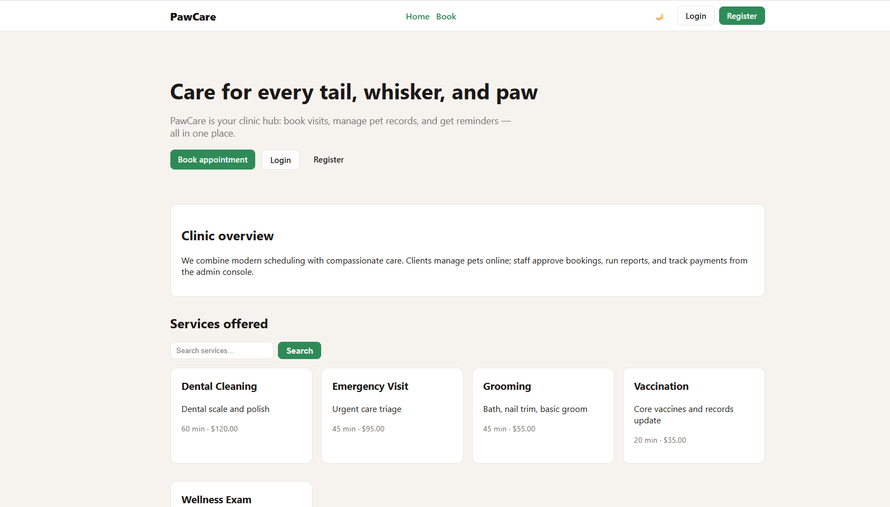
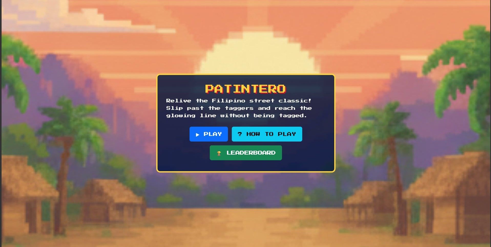
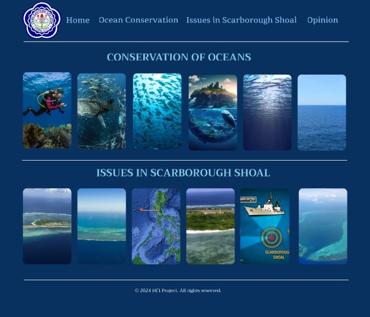
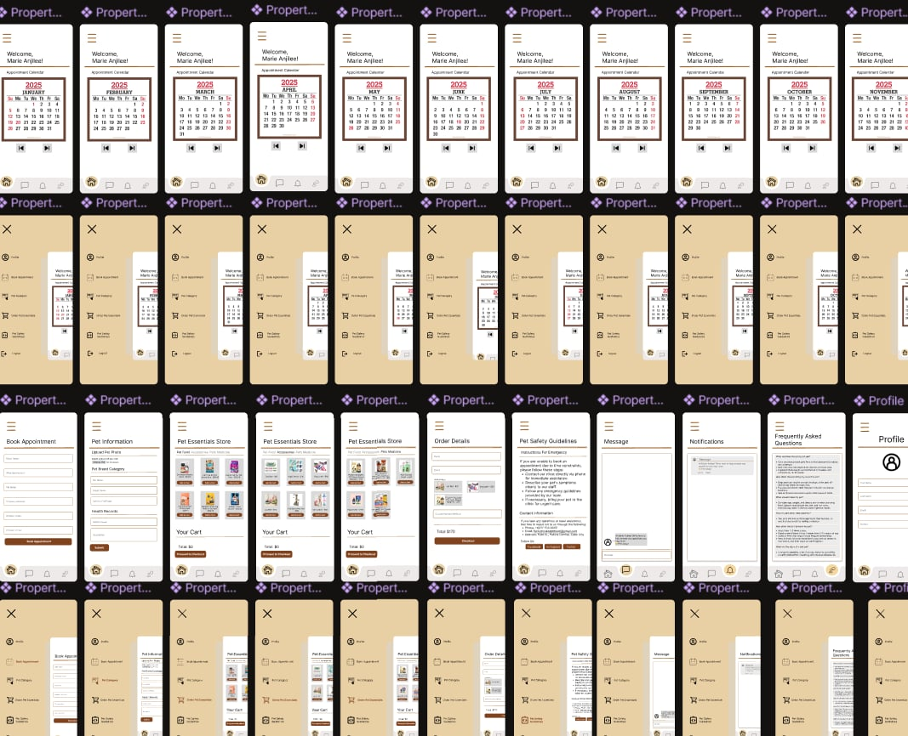
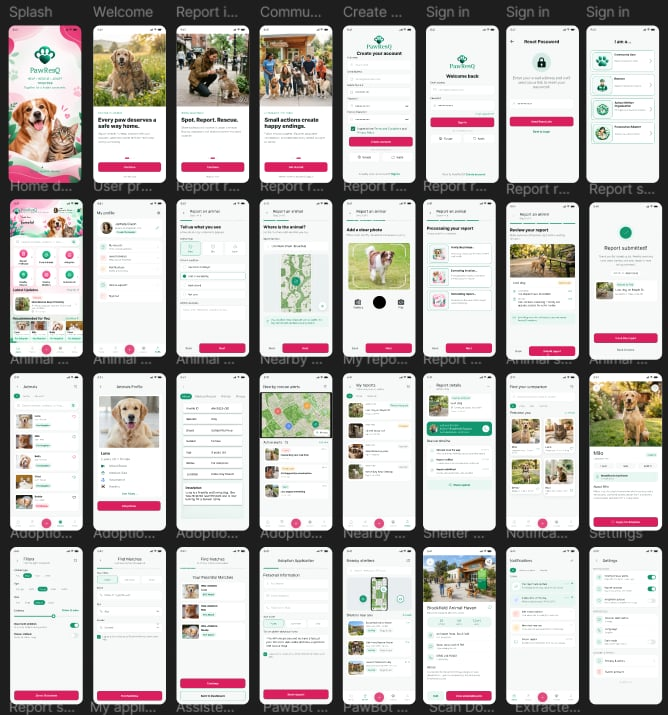

Currently Learning
Exploring web development and programming.
IT STUDENT · OPEN TO OJT OPPORTUNITIES
HELLO, I'M JUCILLE MAE
I'm a 4th-year Bachelor of Science in Information Technology student who enjoys learning how technology can turn ideas into useful, thoughtful digital experiences.
Explore my workBased in Cebu City, Philippines
SCROLL TO EXPLOREGET TO KNOW ME
Hi, I'm Jucille Mae Bacalla, a fourth-year Bachelor of Science in Information Technology student based in Cebu City, Philippines. I enjoy exploring technology, learning how websites are built, and discovering creative ways to turn ideas into digital experiences.
I'm continuously developing my skills through school activities, practice projects, and collaboration with others.
I'm interested in web development, programming, and user interface design, and I like creating websites that are useful and easy to use.
Exploring web development and programming.
UI/UX design and thoughtful digital experiences.
To become a skilled web developer and make a positive impact through technology.
INTERESTS & HOBBIES
Outside of class requirements, these are the things that keep me curious and keep me practicing.
Learning how websites are built, from structure to style.
Practicing logic and problem-solving through code.
Thinking about how things look and how easy they are to use.
Staying curious about new tools and how they shape everyday life.
Turning ideas into something real that people can use.
WHAT I CAN DO
As an Information Technology student, I'm continuously developing my technical and creative skills through practice, and personal projects. I'm interested in learning new tools, improving my abilities, and creating useful digital experiences.
Structuring web pages.
Styling layouts, typography, colors, and responsive designs.
Learning the basics of making pages interactive.
Logic, variables, conditions, loops, and functions from my IT courses.
Beginner and currently learning these languages.
Familiar with the syntax and basic concepts.
Sketching and planning screens before building them.
Simple layouts, visual consistency, and user-friendly design principles.
Writing and editing my code.
Storing project files and publishing website updates.
I enjoy sharing ideas with classmates and helping our group finish what we started.
I'm learning to explain my ideas clearly and to listen before I respond.
I like turning plain ideas into designs that feel fresh and personal.
When something breaks, I try to stay patient and work through it step by step.
I'm comfortable picking up new tools and adjusting when plans change.
I'm open to feedback and always curious about what I can improve next.
Want to see how I put these skills into practice?
See my projectsMY WORK & LEARNING JOURNEY
Every project has been part of my journey as an Information Technology student. From my first manually coded websites and simple birthday greetings to group collaborations and interface prototypes in Figma, each experience has helped me learn, experiment, and improve. Here are some of the projects I’ve worked on throughout my studies.
Small personal web projects where I explored how to build websites, arrange content, and create simple, meaningful online experiences.

A personal birthday greeting website created for our amazing ate.

A personalized birthday greeting website for nanay loth.
These projects represent my early experience as a first-year IT student. During this stage, I was learning to build websites manually, experimenting with layouts, and understanding the basics of web development without relying on AI coding prompts.

An early student website from my first year. This project represents part of my experience learning to structure web pages and develop a website through manual coding.

An early website project from my freshman year that reflects my initial experience practicing website development and learning the fundamentals of coding.
Group activities from my second year of Information Technology studies.

A second-year group activity that gave me experience working on a website project as part of my Information Technology studies.
Working with classmates through shared repositories helped me experience collaborative development, explore other approaches to coding, and understand how GitHub can be used to organize project files.

A collaborative class project repository involving work with my groupmates. This project forms part of my experience exploring shared code and working on development activities with others.

A group collaboration available through GitHub. This project represents my experience participating in collaborative class activities and exploring a shared development project.
During my second year, I started exploring Figma and learning how to design website interfaces and create interactive prototypes. These activities helped me understand visual layout, interface organization, and the process of planning a website before development.

A personal website design exploration created while I was beginning to learn Figma and practice arranging website elements into a visual interface.

A management-system interface prototype that represents my experience exploring UI/UX design and organizing screens and interface elements in Figma.

My ongoing capstone project involves collaborating with my groupmates on the design of an animal welfare, rescue, and adoption management system. Our current design work is documented in Figma, where we continue to develop and refine the interface.
GET IN TOUCH
Have a question, project idea, or opportunity? I’d love to hear from you.
A summary of my education, skills, and career objective. I’m looking for an On-the-Job Training (OJT) opportunity in Information Technology.